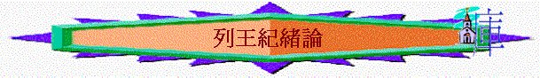

一.書名
∼古希伯來聖經取列王紀首句「大衛王」為本書之名
∼後來，希伯來聖經稱為「列王紀」，原來王上及王下是一冊，沒有分開
∼希臘文舊約的七十士譯本因為繙譯要補充希伯來原文，篇幅增多，分為上下兩冊
二.書中時代
「大衛王年紀老邁，雖用被遮蓋，仍不覺暖。」王上1:1
「猶大王約雅斤被擄後三十七年，巴比倫王以未米羅達元年
∼由大衛晚年至猶大王約雅斤被擄後三十七年，(當時以色列己亡國了)
三.作者
∼書中沒有寫明
∼但應是以色列亡國被擄後的人
∼有人說是耶利米，因王下24:18-25:30差不多與耶52:31-34章相同
四.作者參考歷史
「所羅門其餘的事，凡他所行的和他的智慧都寫在所羅門記上。」王上11:41
「耶羅波安其餘的事，他怎樣爭戰，怎樣作王，都寫在以色列諸王記上。」王上14:19
「羅波安其餘的事，凡他所行的，都寫在猶大列王記上。」王上14:29
∼應參考較早期朝廷紀錄及歷史資料，包括所羅門記，以色列諸王記及猶大列王記
五.本書內容與特色
1.記載以色列王歷史之書
∼書內容與書名也吻合，本書記載了大衛之後以色列之王的生平與歷史，也記載他們所管治國度的興衰
2.但不是純是王國歷史書
∼若單是一記載王生平之書，但為何記一些王如(所羅門、亞哈、希西家)特別多，另一些王(如以色王暗利也是傑出君王，但聖經僅以8節經文記下，似乎作者是在歷史中選擇一些片段來特出書中的重要主題
∼而本書若是記載王的歷史，為何用了很多篇幅記兩位先知----以利亞及以利沙，比其很多王的記錄更多
3.在諸王歷史中特出「神」
∼幾乎每一章聖經也有「耶和華」的名字，在世界的歷史中，難發現有一本歷史書能記載這麼多關乎真神的事
∼神是在以色列的王國中，以色列是神所揀選的國度，神是掌管、介入、觀看、在祂揀選的
∼以色列王朝每一段歷史也非偶然，也彰顯
A.神的揀選
「我必揀選你，使你照心裡一切所願的，作王治理以色列。」王上11:37
B.神的同在
「耶和華怎樣與我主我王同在，願他照樣與所羅門同在，使他的國位比我主大衛王的國位更大。」王上1:37
C.神的堅立
「耶和華堅立我，使我坐在父親大衛的位上，照著所應許的話為我建立家室；現在我指著永生的耶和華起誓，亞多尼雅今日必被治死。」」王上2:24
D.神的律例
「遵守耶和華你神所吩咐的，照著摩西律法上所寫的行主的道，謹守他的律例、誡命、典章、法度。這樣，你無論做什麼事，不拘往何處去，盡都亨通。」王上2:3
E.神的應許
「我定意要為耶和華我神的名建殿，是照耶和華應許我父親大衛的話說：『我必使你兒子接續你坐你的位，他必為我的名建殿。』」王上5:5
F.神的參與/作為
「現在耶和華我的神使我四圍平安，沒有仇敵，沒有災禍。」王上5:4
「當夜，耶和華的使者出去，在亞述營中殺了十八萬五千人。清早有人起來，一看，都是死屍了。」王下19:35
G.神的掌權
「米該雅說：「你要聽耶和華的話！我看見耶和華坐在寶座上，天上的萬軍侍立在他左右。」王上22:19
H.神的忿怒
「因此耶和華的怒氣在耶路撒冷和猶大發作，以致將人民從自己面前趕出。」王下24:20
I.神的恩典
「猶大王約雅斤被擄後三十七年，巴比倫王以未米羅達元年
4.諸王歷史中帶出屬靈的「教訓」
A.謹守遵行神的話之重要
「你若效法你父親大衛，遵行我的道，謹守我的律例、誡命，我必使你長壽。」」王上3:14
「但耶和華藉眾先知、先見勸戒以色列人和猶大人說：「當離開你們的惡行，謹守我的誡命律例，遵行我吩咐你們列祖，並藉我僕人眾先知所傳給你們的律法。」他們卻不聽從，竟硬著頸項，效法他們列祖，不信服耶和華他們的神，」王下17:13-14
∼本書有很多「遵行」「謹守」「律例」等字眼
∼原來王的興衰，國家的興亡與王與人遵不遵守神的話有關的！
B.效法行耶和華眼中看為正的王
「亞撒效法他祖大衛行耶和華眼中看為正的事，」王上15:11
「亞撒利雅行耶和華眼中看為正的事，效法他父親亞瑪謝一切所行的；」王下15:3
「約坦行耶和華眼中看為正的事，效法他父親烏西雅一切所行的；」王下15:34
∼本書在寫一段王的歷史中，也加了註腳，那王是否行耶和華眼中看為正或惡的事
∼書中也有一些南國的王行神眼中看為正的事，我們要加以留心及效法
C.勿從耶和華眼中看為惡的王
「拿答行耶和華眼中看為惡的事，行他父親所行的，犯他父親使以色列人陷在罪裡的那罪。」王上15:26
「約西亞行耶和華眼中看為正的事，行他祖大衛一切所行的，不偏左右。」王下21:2
「我必使你平平安安的歸到墳墓到你列祖那裡；我要降與這地的一切災禍，你也不至親眼看見。』」他們就回覆王去了。」王下21:20
「約雅敬行耶和華眼中看為惡的事，效法他列祖一切所行的。」王下23:37
∼但很可惜的是行耶和華眼中看為惡的王比行正的更多，北國所有王都是行神眼中看為惡(約有20位王)
∼而南國自所羅門後，也出現20位王，可惜只有8位被神認定為行耶和華眼中看為正的王
∼難怪神對以色列王朝有如此忿怒，要降災禍給他們！
六.主題----屬神國度的衰落
「何細亞第九年亞述王攻取了撒瑪利亞，將以色列人擄到亞述，把他們安置在哈臘與歌散的哈博河邊，並瑪代人的城邑。這是因以色列人得罪那領他們出埃及地、脫離埃及王法老手的耶和華他們的神，去敬畏別神，」王下17:6-7
「猶大人也不遵守耶和華他們神的誡命，隨從以色列人所立的條規。耶和華就厭棄以色列全族，使他們受苦，把他們交在搶奪他們的人手中，以致趕出他們離開自己面前，」王下17:19-20
∼讀列王紀時，我們發現一件特別之處，本書一直都是記下一些歷史事實或耶和華對當
∼而列王紀一開始提及大衛已年老，最後提及以色列亡國，我們看本書將整段以色列漸趨敗落(無論是在信仰、政治上)說明出來
∼而以色列是神所揀選的國度，但神也厭棄他們，為何屬神的國度有如此下場，相信作者選擇一些歷史片段來表達他們衰敗的原因
七.大綱
1.二
王----行神的旨意得堅固(王上1-10)
2.二
國----不專心順服終分裂(王上11-16)
3.二先知----神能力彰顯仍剛硬(王上17-王下9:4)
4.二結局----繼續行惡至終亡國(王下9:5-25:30)
八.真理----遵守神的話
∼屬神國度衰敗原因，是因為他們不謹守遵行神的話，而從他們的反面教材，帶給我們寶貴的真理
1.謹守原因(對以色列王來說)
A.王得亨通
「遵守耶和華你神所吩咐的，照著摩西律法上所寫的行主的道，謹守他的律例、誡命、典章、法度。這樣，你無論做什麼事，不拘往何處去，盡都亨通。」王上2:3
B.王得長壽
「你若效法你父親大衛，遵行我的道，謹守我的律例、誡命，我必使你長壽。」王上3:14
C.神會同在
「論到你所建的這殿，你若遵行我的律例，謹守我的典章，遵從我的一切誡命，我必向你應驗我所應許你父親大衛的話。我必住在以色列人中間，並不丟棄我民以色列。」」王上6:12-13
D.國得堅固
「你若效法你父大衛，存誠實正直的心行在我面前，遵行我一切所吩咐你的，謹守我的律例典章，我就必堅固你的國位在以色列中，直到永遠，正如我應許你父大衛說：『你的子孫必不斷人坐以色列的國位。』」王上9:4-5
2.不守的惡果
A.神發怒
「那去召米該雅的使者對米該雅說；「眾先知一口同音地都向王說吉言，你不如與他們說一樣的話，也說吉言。」」王下22:13
B.神厭棄
「猶大人也不遵守耶和華他們神的誡命，隨從以色列人所立的條規。耶和華就厭棄以色列全族，使他們受苦，把他們交在搶奪他們的人手中，以致趕出他們離開自己面前，」王下17:19-20
C.國奪回
「所以耶和華對他說：「你既行了這事，不遵守我所吩咐你守的約和律例，我必將你的國奪回，賜給你的臣子。」王上11:11
D.終被擄
「何細亞第九年亞述王攻取了撒瑪利亞，將以色列人擄到亞述，把他們安置在哈臘與歌散的哈博河邊，並瑪代人的城邑。這是因以色列人得罪那領他們出埃及地、脫離埃及王法老手的耶和華他們的神，去敬畏別神，」王下17:6-7
3.不守的內容
A.沒廢邱壇
「只是邱壇還沒有廢去，百姓仍在那裡獻祭燒香。」王下12:3
B.敬拜偶像
「我耶和華與你們所立的約你們不可忘記，也不可敬畏別神。但要敬畏耶和華你們的神，他必救你們脫離一切仇敵的手。」他們卻不聽從，仍照先前的風俗去行。如此這些民又懼怕耶和華，又事奉他們的偶像。他們子子孫孫也都照樣行，效法他們的祖宗，直到今日。」王下17:38-41
C.不求問神
「對王說：「耶和華如此說：『你差人去問以革倫神巴力西卜，豈因以色列中沒有神可以求問嗎？所以你必不下所上的床，必定要死！』」」王下1:16
D.在地行惡
「又因他流無辜人的血，充滿了耶路撒冷；耶和華決不肯赦免。」王下24:4
E.心高氣傲
「你打敗了以東人就心高氣傲，你以此為榮耀，在家裡安居就罷了，為何要惹禍，使自己和猶大國一同敗亡呢？」」王下14:10
4.不守的態度
「所羅門行耶和華眼中看為惡的事，不效法他父親大衛專心順從耶和華。」王上11:6
「他們又懼怕耶和華，又事奉自己的神，從何邦遷移，就隨何邦的風俗。他們直到如今仍照先前的風俗去行，不專心敬畏耶和華，不全守自己的規矩、典章，也不遵守耶和華吩咐雅各後裔的律法、誡命。（雅各，就是從前耶和華起名叫以色列的。）」王下17:33-34
A.不專心
∼他們又懼怕神，但又事奉自己的神
B.不全守
∼守一些表面規例，但有一些卻不守
C.不遵守
5.不守的原因
A.別人的引誘
「所羅門年老的時候，他的妃嬪誘惑他的心去隨從別神，不效法他父親大衛誠誠實實地順服耶和華他的神。」王上11:4
B.外邦的吸引
「隨從耶和華在他們面前所趕出外邦人的風俗和以色列諸王所立的條規。」王下17:8
「他們又懼怕耶和華，又事奉自己的神，從何邦遷移，就隨何邦的風俗。」王下17:33
C.容惡的留存
「只是邱壇還沒有廢去，百姓仍在那裡獻祭燒香。」王下14:4
D.祖先的惡習
「他行耶和華眼中看為惡的事，不離開尼八的兒子耶羅波安使以色列人陷在罪裡的那罪。」王下15:24
「以色列人犯耶羅波安所犯的一切罪，總不離開，」王下17:22
E.忘記神的話
「書記沙番到王那裡，回覆王說：「你的僕人已將殿裡的銀子倒出數算，交給耶和華殿裡辦事的人了。」書記沙番又對王說：「祭司希勒家遞給我一卷書。」沙番就在王面前讀那書。王聽見律法書上的話，便撕裂衣服，吩咐祭司希勒家與沙番的兒子亞希甘、米該亞的兒子亞革波、書記沙番和王的臣僕亞撒雅，說：「你們去為我、為民、為猶大眾人，以這書上的話求問耶和華；因為我們列祖沒有聽從這書上的言語，沒有遵著書上所吩咐我們的去行，耶和華就向我們大發烈怒。」」王下22:9-13
F.自己的剛硬
「他們卻不聽從，竟硬著頸項，效法他們列祖，不信服耶和華他們的神，」王下17:14
九.注意之處
1.可參考申命記
A.關乎作王的典章(從而顯出王不守神誡命的表現)
「只是王不可為自己加添馬匹，也不可使百姓回埃及去，為要加添他的馬匹，因耶和華曾吩咐你們說：『不可再回那條路去。』他也不可為自己多立妃嬪，恐怕他的心偏邪；也不可為自己多積金銀。他登了國位，就要將祭司利未人面前的這律法書，為自己抄錄一本，存在他那裡，要平生誦讀，好學習敬畏耶和華他的神，謹守遵行這律法書上的一切言語和這些律例，免得他向弟兄心高氣傲，偏左偏右，離了這誡命。這樣，他和他的子孫便可在以色列中，在國位上年長日久。」」申17:16-20
B.關乎十誡及引申的誡命（看以色列人遵守不遵守）
C.關乎以色列人不守誡命的預言（看到神的預知）
「耶和華又對摩西說：「你必和你列祖同睡。這百姓要起來，在他們所要去的地上，在那地的人中，隨從外邦神行邪淫，離棄我，違背我與他們所立的約。」申
31:16
D.關乎不守誡命的惡果（看到神的審判應驗）
「耶和華要從遠方、地極帶一國的民，如鷹飛來攻擊你。這民的言語，你不懂得。這民的面貌兇惡，不顧恤年老的，也不恩待年少的。」申
28:49- 50
「這書上所寫律法的一切話是叫你敬畏耶和華你神可榮可畏的名。你若不謹守遵行，耶和華就必將奇災，就是至大至長的災，至重至久的病，加在你和你後裔的身上，也必使你所懼怕、埃及人的病都臨到你，貼在你身上，又必將沒有寫在這律法書上的各樣疾病、災殃降在你身上，直到你滅亡。你們先前雖然像天上的星那樣多，卻因不聽從耶和華你神的話，所剩的人數就稀少了。先前耶和華怎樣喜悅善待你們，使你們眾多，也要照樣喜悅毀滅你們，使你們滅亡；並且你們從所要進去得的地上必被拔除。耶和華必使你們分散在萬民中，從地這邊到地那邊，你必在那裡事奉你和你列祖素不認識、木頭石頭的神。」申
28:58- 64
2.可參考歷代志上下
∼也記述王國的歷史，可豐富列王紀的內容
3.也留意關乎基督的預表
A.基督是大衛的後裔---祂必作王
「我就必堅固你的國位在以色列中，直到永遠，正如我應許你父大衛說：『你的子孫必不斷人坐以色列的國位。』」王上9:5
B.以利亞---耶穌的先鋒---施洗約翰
「看哪，耶和華大而可畏之日未到以前，我必差遣先知以利亞到你們那裡去。他必使父親的心轉向兒女，兒女的心轉向父親，免得我來咒詛遍地。」瑪 4:5-6
十.參考資料
以色列與猶大諸王年代對照表 (參考:http://www.hebrew.idv.tw/inkings.htm)
|
以色列(北國) |
猶大(南國) |
||
|
耶羅波安第一（X 22） 930-910 拿答（X 2） 910-909 巴沙（X 24） 909-886 以拉（X 2） 886-885 心利（X 七日） 885 暗利（X 12） 885-874 亞哈（X 22） 874-853 亞哈謝（X 2） 853-852 約蘭（X 12） 852-841
耶戶（X 28） 841-814 約哈斯（X 17） 814-798 約阿施（X 16） 798-782 耶羅波安第二（X 41） 793-753 撒迦利雅（X六個月） 753-752 沙龍（X一個月） 752 米拿現（X 10） 751-742 比加轄（X 2） 741-740 比加（X 20） *751-732 何細亞（X 9） 731-723 |
王上12:16-20 王上14:19-20 王上15:25-32 王上15:33-16:6 王上16:8-10 王上16:15-20 王上16:21-28 王上16:29-33 王上22:29-40 王上22:51-53 王下1:1-16 王下1:17 王下9:21-26 王下9:1-10:36 王下13:1-9 王下13:10-13 王下14:23-29 王下15:8-12 王下15:13-16 王下15:17-22 王下15:23-26 王下15:27-31 王下17:1-18 |
羅波安（X 17） 930-914 亞比央（X 3） 913-911 亞撒（O 41） 910-870 約沙法（O 25） 873-849 約蘭（X 8） 849-842 亞哈謝（X 1） 841 亞他利雅（X 6） 841-836 約阿施（O 40） 836-797 亞瑪謝（O 29） 797-768 亞撒利雅（烏西雅） 791-740 （O 52） 約坦（O 16） 751-736 亞哈斯（X 16） 736-716 希西家（O 29） *729-687 瑪拿西（X 55） *696-642 亞們（X 2） 641-640 約西亞（O 31） 639-609 約哈斯（X三個月） 609 約雅敬（X 11） 608-598 約雅斤（X三個月） 598 西底家（X 11） 597-586 |
王上11:43-12:1 王上14:31-15:6 王上15:8-15 王上22:41-50 王下8:16-19 王下8:25-29 王下11:1-3 王下12:1-21 王下14:1-7 王下15:1-7 王下15:32-38 王下16:1-4 王下18:1-9 王下21:1-3 王下21:19-26 王下22:1-2 王下23:31-32 王下23:36-37 王下24:8-9 王下24:18-20 |
以上所有年代均為公元前。
（ ）中的X或O代表耶和華眼中的壞或好王，數目代表作王多少年。
*比加大概是米拿現和比加轄作王時的幕後操權人物
*亞哈斯與希西家、希西家與瑪拿西曾共同攝政
*暗利興起時，提比尼與他對立作王（王上16:21）